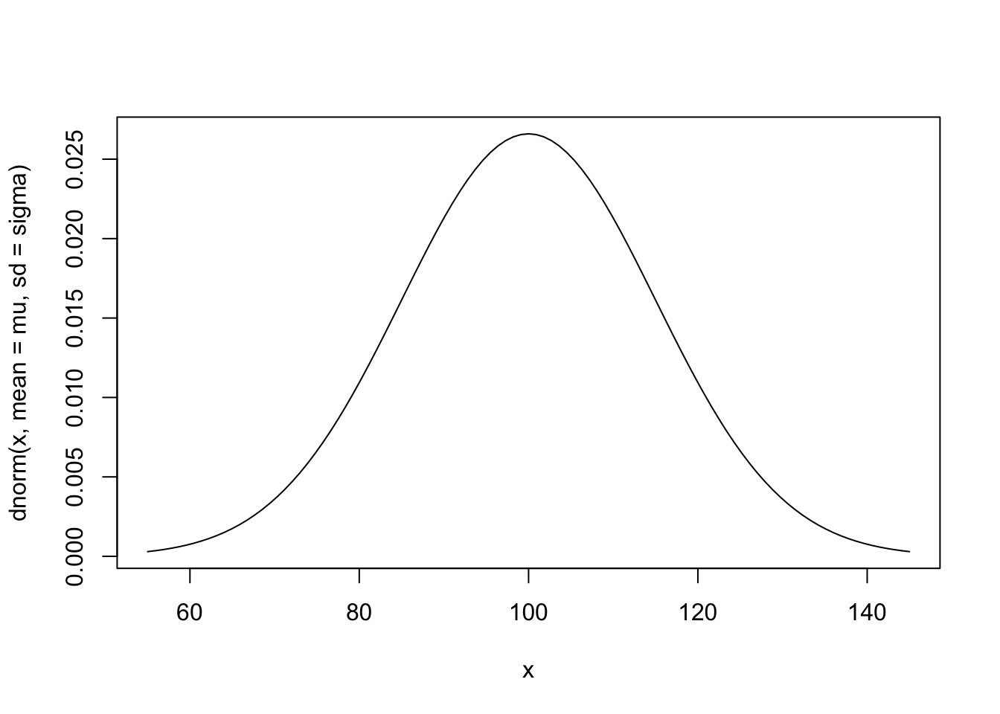
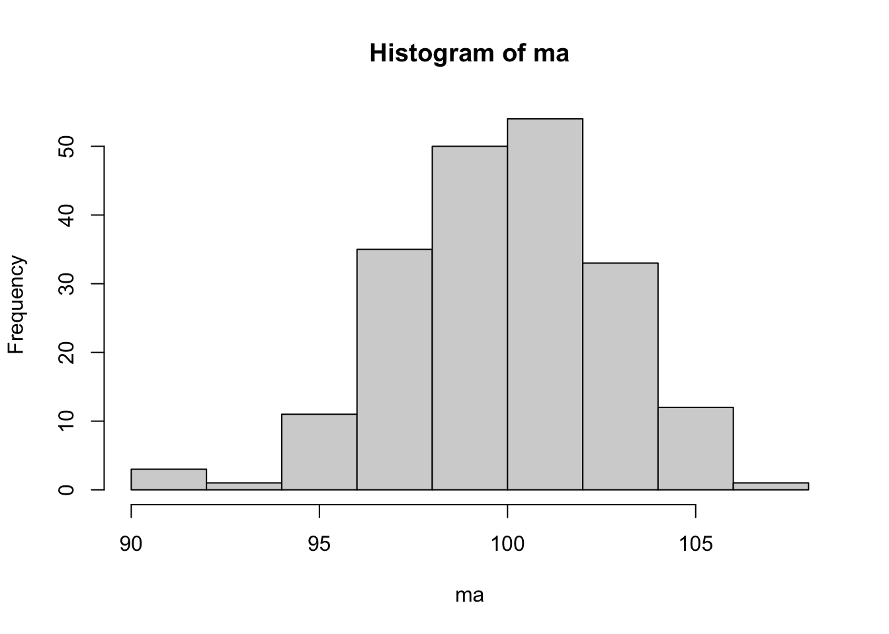

4 Amostragem
Inicia com o plano amostral, uma avaliação que leva em conta as medidas a serem avaliadas e os recursos disponíveis. Da mesma forma que os laboratórios retiram amostras de sangue para exames de saúde, cozinheiros experimentam parte da comida para provar os temperos e fábricas realizam testes destrutivos em parte da sua produção para avaliar a qualidade do que está sendo produzido. Será feita uma breve revisão dos principais conceitos de amostragem baseada em (Bolfarine and Bussab 2005).
4.1 Definições básicas
4.1.1 Unidade Elementar
A unidade elementar pode ser um objeto, animal ou pessoa. Em certos casos existe mais de uma maneira de definir a unidade elementar, onde se faz necessário o entendimento dos especialistas envolvidos. A unidade elementar é uma das definições mais importantes do campo científico, pois é base de toda a construção das hipóteses de pesquisa.
4.1.2 Unidade Amostral
4.1.3 Sistema de referências
Em relação às informações de um estudo, deve-se fazer inicialmente uma avaliação das bases de dados já disponíveis para então proceder com a avaliação da viabilidade de um levantamento de dados mais específico. Este levantamento envolve se montar um plano amostral, contratar, treinar e manter pessoas para a coleta, criar os protocolos de resposta bem como gerar e analisar os bancos de dados. Caso decida-se realizar tal levantamento, serão necessárias listas relacionando as unidades populacionais e amostrais. Na falta de tais listas, utilizam-se sistemas de referências, que são fontes que descrevem o universo a ser investigado. Podem ser informações razoavelmente atualizadas, como mapas, censos ou listas reunidas.
4.2 Universo \(\mathcal{U}\)
Usualmente o universo possui tamanho \(N\) elevado, até mesmo infinito, mas em alguns casos pode ser relativamente pequeno. É denotado formalmente por \[\mathcal{U} = \lbrace 1,2 \ldots, N \rbrace.\]
4.2.1 Parâmetros
4.3 Amostras
4.3.1 Plano Amostral
Plano A \(\cdot\) Amostragem Aleatória Simples com reposição (AASc) \[P(11)=P(12)=P(13)=1/9 \\ P(21)=P(22)=P(23)=1/9 \\ P(31)=P(32)=P(33)=1/9 \\ P(\boldsymbol{a}) = 0, \; \forall \boldsymbol{a} \in \mathcal{A}(\mathcal{U}).\]
Plano B \(\cdot\) Amostragem Aleatória Simples sem reposição (AASs) \[P(12)=P(13)=1/6 \\ P(21)=P(23)=1/6 \\ P(31)=P(32)=1/6 \\ P(\boldsymbol{a}) = 0, \; \forall \boldsymbol{a} \in \mathcal{A}(\mathcal{U}).\]
Plano C \(\cdot\) Combinações \[P(12)=P(13)=P(23)=1/3 \\ P(\boldsymbol{a}) = 0, \; \forall \boldsymbol{a} \in \mathcal{A}(\mathcal{U}).\]
Plano D \[P(3)=9/27 \\ P(12)=P(23)=3/27 \\ P(111)=P(112)=P(113)=P(123)=1/27 \\ P(221)=P(222)=P(223)=P(231)=1/27 \\ P(331)=P(332)=P(333)=P(312)=1/27 \\ P(\boldsymbol{a}) = 0, \; \forall \boldsymbol{a} \in \mathcal{A}(\mathcal{U}).\]
4.3.2 Distribuições amostrais
idade do Exemplo 4.4 e as estatísticas \(h_1(\boldsymbol{x})=\frac{1}{n}\sum_{i=1}^n x_i\) e \(h_2(\boldsymbol{x})=\frac{1}{n-1}\sum_{i=1}^n (x_i-h_1(\boldsymbol{x}))^2\) aplicadas sobre o plano amostral A do Exemplo 4.16. Note que \(h_1(\boldsymbol{x})\) e \(h_2(\boldsymbol{x})\) são respectivamente a média e a variância amostrais. \(\\\)
- Plano A \(\cdot\) Amostragem Aleatória Simples com reposição (AASc)
| \(i\) | 1 | 2 | 3 | 4 | 5 | 6 | 7 | 8 | 9 |
| \(\boldsymbol{a}\) | 11 | 12 | 13 | 21 | 22 | 23 | 31 | 32 | 33 |
| \(P(\boldsymbol{a})\) | 1/9 | 1/9 | 1/9 | 1/9 | 1/9 | 1/9 | 1/9 | 1/9 | 1/9 |
| \(\boldsymbol{x}\) | (24,24) | (24,32) | (24,49) | (32,24) | (32,32) | (32,49) | (49,24) | (49,32) | (49,49) |
| \(h_1(\boldsymbol{x})\) | 24.0 | 28.0 | 36.5 | 28.0 | 32.0 | 40.5 | 36.5 | 40.5 | 49.0 |
| \(h_2(\boldsymbol{x})\) | 0.0 | 32.0 | 312.5 | 32.0 | 0.0 | 144.5 | 312.5 | 144.5 | 0.0 |
| \(h_1\) | 24.0 | 28.0 | 32.0 | 36.5 | 40.5 | 49.0 | Total |
| \(f_{h1}\) | 1 | 2 | 1 | 2 | 2 | 1 | 9 |
| \(p_{h1}\) | 1/9 | 2/9 | 1/9 | 2/9 | 2/9 | 1/9 | 1 |
| \(h_2\) | 0.0 | 32.0 | 144.5 | 312.5 | Total |
| \(f_{h2}\) | 3 | 2 | 2 | 2 | 9 |
| \(p_{h2}\) | 3/9 | 2/9 | 2/9 | 2/9 | 1 |
idade do Exemplo 4.4 e a estatística \(h_1(\boldsymbol{x})=\frac{1}{n}\sum_{i=1}^n x_i\), agora aplicada sobre o plano amostral B do Exemplo 4.16. \(\\\)
- Plano B \(\cdot\) Amostragem Aleatória Simples sem reposição (AASs)
| \(i\) | 1 | 2 | 3 | 4 | 5 | 6 |
| \(\boldsymbol{a}\) | 12 | 13 | 21 | 23 | 31 | 32 |
| \(P(\boldsymbol{a})\) | 1/6 | 1/6 | 1/6 | 1/6 | 1/6 | 1/6 |
| \(\boldsymbol{x}\) | (24,32) | (24,49) | (32,24) | (32,49) | (49,24) | (49,32) |
| \(h_1(\boldsymbol{x})\) | 28.0 | 36.5 | 28.0 | 40.5 | 36.5 | 40.5 |
| \(h_1\) | 28.0 | 36.5 | 40.5 | Total |
| \(f_{h1}\) | 2 | 2 | 2 | 6 |
| \(p_{h1}\) | 2/6 | 2/6 | 2/6 | 1 |
idade do Exemplo 4.4 e a estatística \(h_1(\boldsymbol{x})=\frac{1}{n}\sum_{i=1}^n x_i\), agora aplicada sobre o plano amostral C do Exemplo 4.16. \(\\\)
- Plano C \(\cdot\) Combinações
| \(i\) | 1 | 2 | 3 |
| \(\boldsymbol{a}\) | 12 | 13 | 23 |
| \(P(\boldsymbol{a})\) | 1/3 | 1/3 | 1/3 |
| \(\boldsymbol{x}\) | (24,32) | (24,49) | (32,49) |
| \(h_1(\boldsymbol{x})\) | 28.0 | 36.5 | 40.5 |
| \(h_1\) | 28.0 | 36.5 | 40.5 | Total |
| \(f_{h1}\) | 1 | 1 | 1 | 3 |
| \(p_{h1}\) | 1/3 | 1/3 | 1/3 | 1 |
altura. Para os Exemplos 4.20 e 4.21, calcule também a estatística \(h_2(\boldsymbol{x})=\frac{1}{n-1}\sum_{i=1}^n (x_i-h_1(\boldsymbol{x}))^2\). \(\\\)
## Var1 Var2
## 1 1 1
## 2 2 1
## 3 3 1
## 4 1 2
## 5 2 2
## 6 3 2
## 7 1 3
## 8 2 3
## 9 3 3## [,1] [,2]
## [1,] 1 1
## [2,] 1 2
## [3,] 1 3
## [4,] 2 1
## [5,] 2 2
## [6,] 2 3
## [7,] 3 1
## [8,] 3 2
## [9,] 3 3## [,1] [,2]
## [1,] 1 2
## [2,] 1 3
## [3,] 2 1
## [4,] 2 3
## [5,] 3 1
## [6,] 3 2x1 <- c(24,32,49) # dados de idade
n <- ncol(aasc)
# AASc
(xc <- cbind(x1[aasc[,1]], x1[aasc[,2]])) # dados amostrais de idade com reposição## [,1] [,2]
## [1,] 24 24
## [2,] 24 32
## [3,] 24 49
## [4,] 32 24
## [5,] 32 32
## [6,] 32 49
## [7,] 49 24
## [8,] 49 32
## [9,] 49 49## [1] 24.0 28.0 36.5 28.0 32.0 40.5 36.5 40.5 49.0## mxc
## 24 28 32 36.5 40.5 49
## 1 2 1 2 2 1## mxc
## 24 28 32 36.5 40.5 49
## 1/9 2/9 1/9 2/9 2/9 1/9# vyc <- (rowMeans(xc^2)-mxc^2)*(n/(n-1))
# AASs
(xs <- cbind(x1[aass[,1]], x1[aass[,2]])) # dados amostrais de idade sem reposição## [,1] [,2]
## [1,] 24 32
## [2,] 24 49
## [3,] 32 24
## [4,] 32 49
## [5,] 49 24
## [6,] 49 32## [1] 28.0 36.5 28.0 40.5 36.5 40.5## mxs
## 28 36.5 40.5
## 2 2 2## mxs
## 28 36.5 40.5
## 1/3 1/3 1/3arrangements do R. Note que são obtidas as amostras via AASs através da função permutations e as amostras por combinação, sem qualquer tipo de repetição, pela função combinations.
## [1] 6## [,1] [,2]
## [1,] 1 2
## [2,] 1 3
## [3,] 2 1
## [4,] 2 3
## [5,] 3 1
## [6,] 3 2## [,1] [,2]
## [1,] 24 32
## [2,] 24 49
## [3,] 32 24
## [4,] 32 49
## [5,] 49 24
## [6,] 49 32## [1] 28.0 36.5 28.0 40.5 36.5 40.5## [1] 35## [1] 3## [,1] [,2]
## [1,] 1 2
## [2,] 1 3
## [3,] 2 3## [,1] [,2]
## [1,] 24 32
## [2,] 24 49
## [3,] 32 49## [1] 28.0 36.5 40.5## [1] 35Teorema Central do Limite
O Teorema Central do Limite (TCL) é um dos principais resultados da Probabilidade. Ele mostra que, sob certas condições razoavelmente alcançadas na prática, a soma ou média de uma sequência de variáveis aleatórias independentes e identicamente distribuídas (iid)19 têm distribuição aproximadamente normal. Este resultado permite a resolução aproximada de problemas que envolvam muitos cálculos, usualmente impraticáveis dado o volume de operações necessárias.
A correção de continuidade ocorre quando soma-se 0.5 no numerador da Equação (4.6). (James 2010) sugere o uso da expressão ‘Teorema Central do Limite’ no lugar de ‘Teorema do Limite Central’, pois central é o teorema, não o limite. A origem da expressão é atribuída ao matemático húngaro George Pólya, ao se referir a der zentrale Grenzwertsatz, i.e., o ‘central’ refere-se ao ‘teorema do limite’.
Distribuição amostral da proporção
A proporção é uma média no caso de a variável admitir apenas os valores 0 e 1, portanto o TCL se aplica diretamente a este tipo de estrutura.
n <- 420
p <- 0.5
S <- 200
mS <- n*p # 210
sS <- sqrt(n*p*(1-p)) # 10.24695
# Aproximação da binomial pela normal SEM correção de continuidade
(z <- (S-mS)/sS)## [1] -0.976## [1] 0.165## [1] -0.927## [1] 0.177## [1] 0.177Distribuição amostral da média
Com base no Teorema Central do Limite sabe-se que a distribuição das médias amostrais de qualquer variável \(X\) que satisfaça as condições do teorema converge para a distribuição normal. Considere que \(X\) tem uma distribuição \(\mathcal{D}\) qualquer, com média \(\mu\) e desvio padrão \(\sigma\), simbolizada por \[X \sim \mathcal{D}(\mu,\sigma).\] Pelo TCL, a distribuição das médias amostrais de qualqer tamanho \(n_0\) é tal que \[\bar{X}_{n_0} \sim \mathcal{N} \left( \mu,\frac{\sigma}{\sqrt{n_0}} \right).\] A medida \(\sigma/\sqrt{n_0}\) é conhecida como erro padrão (da média). O TCL é um resultado assintótico20, portanto quanto mais próxima \(\mathcal{D}\) estiver de \(\mathcal{N}\), mais rápida deve ser a convergência de \(\bar{X}_{n_0}\) para a distribuição normal.
mu <- 100 # média de X
sigma <- 15 # desvio padrão de X
curve(dnorm(x, mean=mu, sd=sigma), from=mu-3*sigma, to=mu+3*sigma) # X ~ N(100,15)
n0 <- 25 # tamanho das amostras
n <- 200 # número de amostras
set.seed(1234) # fixando semente pseudo-aleatória para garantir replicação
a <- MASS::mvrnorm(n0, mu = rep(mu,n), Sigma = sigma^2*diag(n)) # amostras
ma <- colMeans(a) # médias das n amostras
hist(ma) # histograma das médias
## [1] 99.9## [1] 2.82## [1] 3n0 e n, verificando o que ocorre no histograma, média e desvio padrão de ma. Atente para o fato de que valores de n maiores que 1000 podem tornar o processo custoso computacionalmente.
4.3.3 Amostra representativa
Ouve-se frequentemente o argumento de que uma boa amostra é aquela que é representativa. Indagado sobre a definição de uma amostra representativa, a resposta mais comum é algo como: “aquela que é uma micro representação do universo”. Mas para se ter certeza de que uma amostra seja uma micro representação do universo para uma dada característica de interesse, deve-se conhecer o comportamento dessa mesma característica da população. Então, o conhecimento da população seria tão grande que tonar-se-ia desnecessária a coleta da amostra.
(Bolfarine and Bussab 2005, 14)
4.3.4 Tipos de amostras

Procedimentos probabilísticos objetivos são mais bem aceitos academicamente, ainda que na prática nem sempre possam ser executados. Quando isso ocorre, podem-se considerar procedimentos que sejam possíveis de serem executados.
4.4 Principais técnicas de amostragem
4.4.1 Amostragem Aleatória Simples
Amostragem Aleatória Simples (AAS) é o método mais básico de seleção de amostras, sendo referência para todos os demais planos amostrais. A partir de uma lista completa das \(N\) unidades elementares da população seleciona-se cada unidade amostral com igual probabilidade, de tal forma que a cada sorteio os elementos tenham a mesma chance de serem escolhidos. A necessidade de uma lista completa da população para realizar uma AAS pode eventualmente ser um limitante na aplicação deste tipo de metodologia, pois na prática nem sempre é possível obter tal listagem. Os planos amostrais A e B discutidos nos Exemplos 4.16, 4.19 e 4.20 são caracterizados como AAS.
AAS sem reposição - AASs
Caso a unidade sorteada seja retirada da população e seja realizado um novo sorteio, é dito que procedeu-se com uma AAS restrita ou sem reposição, indicado por AASs.
set.seed(1234) # Fixando a geração pseudo-aleatória
sort(sample(1:60, size = 6, replace = F)) # Apostando na Mega-Sena da CEF via AASs## [1] 16 22 28 37 44 58?set.seed,?sort e ?sample.
AAS com reposição - AASc
Caso a unidade sorteada tenha a chance de participar novamente da amostra, o procedimento é chamado AAS irrestrita ou com reposição, indicado por AASc.
4.4.2 Amostragem Sistemática
Considere uma população de \(N\) unidades elementares numeradas de 1 a \(N\). Para selecionar uma amostra de \(n\) observações sorteia-se aleatoriamente uma das primeiras \(k=N/n\) unidades, digamos \(a\), com probabilidade \(1/k\) selecionando sistematicamente as próximas observações a cada \(k\) unidades. Matematicamente, \[a, a+k, a+2k, \ldots, a+(n-1)k.\]
## [1] 20set.seed(1) # Fixando a geração pseudo-aleatória
(a <- sample(1:k, size = 1)) # Amostra de tamanho 1 com probabilidade 1/k## [1] 4## [1] 4
## [1] 24
## [1] 44
## [1] 64
## [1] 84(a) Rode o código repetidas vezes retirando a linha
set.seed(1). O que você observa?(b) Refaça o exercício considerando outros valores de \(N\) e \(n\), tais que \(n<N\).
4.4.3 Amostragem Estratificada
Segundo (Bolfarine and Bussab 2005, 93),
Amostragem estratificada consiste na divisão de uma população em grupos (estratos) segundo alguma(s) característica(s) conhecida(s) na populaçãao sob estudo, e de cada um desses estratos são selecionadas amostras em proporções convenientes.
O objetivo deste tipo de amostragem é que o pesquisador possa se valer de estruturas pré-existentes de maneira a melhorar as inferências, reduzindo sua variabilidade.
4.5 Cálculo do tamanho da amostra
O cálculo do tamanho de amostra é baseado em uma série de premissas assumidas pelo pesquisador. Os valores sugeridos pelos diversos métodos de cálculo de tamanho de amostra devem ser considerados apenas como uma referência, dada a arbitrariedade das medidas utilizadas em sua obtenção. Tempo e custo são dois limitantes que devem ser levados em conta, podendo se sobrepor aos cálculos de tamanho de amostra.
A seguir serão apresentados casos bastante simples, mas suficientes para ilustrar os princípios utilizados. Para mais funcionalidades recomenda-se o pacote pwr (Champely 2020) do R e o software G*Power (Franz Faul and Buchner 2007), (Franz Faul and Lang 2009). Para uma abordagem mais teórica recomenda-se (Chow, Wang, and Shao 2007).
4.5.1 Média
Uma forma de estimar o tamanho da amostra no caso da inferência para a media universal \(\mu\) é considerar a margem de erro da Equação (5.4) e isolar \(n\) na forma \[\begin{equation} n = \left \lceil{ \left( \frac{z \sigma}{\varepsilon} \right)^2 }\right \rceil. \tag{4.7} \end{equation}\]
O operador \(\left \lceil{ x }\right \rceil\) indica a função teto de \(x\), i.e., indica o primeiro inteiro acima de \(x\).
# Equação (3.8)
n_m <- function(z,sigma,e) {
exato <- (z*sigma/e)^2
teto <- ceiling(exato)
return(list(exato=exato,
teto=teto))
}
n_m(1.96,15,3)## $exato
## [1] 96
##
## $teto
## [1] 97## [1] 96## [1] 974.5.2 Proporção
Uma forma de estimar o tamanho da amostra no caso da inferência para a proporção universal \(\pi\) é considerar a margem de erro da Equação (5.6) e isolar \(n\) na forma \[\begin{equation} n = \left \lceil{ \frac{z^2 p (1-p)}{\varepsilon^2} }\right \rceil. \tag{4.9} \end{equation}\]
Em certos casos existe informação disponível sobre a proporção, mas quando não há qualquer conhecimento a respeito desta medida considera-se \(p=\frac{1}{2}\), ponto no qual \(p(1-p)\) atinge seu máximo.
Example 4.31 (Tamanho da amostra para a proporção) Em uma pesquisa eleitoral deseja-se calcular o tamanho de amostra aproximado para que a margem de erro seja de \(\varepsilon = 2\%\) com confiança de \(1-\alpha = 95\%\). Considerando a Equação (4.9), sabe-se da tabela da distribuição normal padrão que \(z = 1.96 \approx 2\), e que \(p(1-p)\) atinge seu máximo quando \(p=\frac{1}{2}\). Assim, \[\begin{equation} n \approx \left \lceil{ \frac{2^2 \times \frac{1}{2} \times (1-\frac{1}{2})}{\varepsilon^2} }\right \rceil = \left \lceil{ \frac{1}{\varepsilon^2} }\right \rceil \tag{4.10} \end{equation}\]
Logo, um IC para a proporção com \(\alpha = 5\%\) para uma margem de erro de \(\varepsilon = 2\%\) pode ser calculado com um tamanho de amostra de aproximadamente \[ n \approx \left \lceil{ \frac{1}{0.02^2} }\right \rceil = 2500. \]# Equação (3.11)
n_p <- function(e) {
exato <- 1/e^2
teto <- ceiling(exato)
return(list(exato=exato,
teto=teto))
}
n_p(0.02)## $exato
## [1] 2500
##
## $teto
## [1] 2500## [1] 2500## [1] 2500n_p do Exemplo 4.31 com diferentes valores de margem de erro. Faça um gráfico para analisar a variação do tamanho da amostra à medida que \(\varepsilon\) aumenta. \(\\\)
4.6 Para saber mais
O material Amostragem: Teoria e Prática Usando R, gentilmente disponibilizado pelos professores Pedro Luis do Nascimento Silva, Zélia Magalhães Bianchini e Antonio José Ribeiro Dias, é uma fonte muito rica para informações adicionais sobre este tópico. Está disponível ainda o livro Análise de Dados Amostrais Complexos, também do professor Pedro Silva em parceria com o professor Djalma Pessoa.
O professor Pedro também compartilhou o vídeo e os slides da apresentação Combinando amostras para aprimorar estimativas – aventuras na amostragem não probabilística, apresentado em 18 de outubro de 2020 no VII Encontro Baiano de Estatística.
Referências
Bolfarine, Heleno, and Wilton de Oliveira Bussab. 2005. Elementos de Amostragem. Editora Blucher. https://www.blucher.com.br/livro/detalhes/elementos-de-amostragem-331.
Champely, Stephane. 2020. Pwr: Basic Functions for Power Analysis. https://CRAN.R-project.org/package=pwr.
Chow, Shein-Chung, Hansheng Wang, and Jun Shao. 2007. Sample Size Calculations in Clinical Rsesearch, Second Edition. CRC press. https://books.google.com.br/books?id=ju-sojS3sa0C&printsec=frontcover&hl=pt-BR#v=onepage&q&f=false.
Franz Faul, Albert-Geroge Lang, Edgard Erdfelder, and Axel Buchner. 2007. “G*Power 3: A Flexible Statistical Power Analysis Program for the Social, Behavioral, and Biomedical Sciences.” Behavior Research Methods, 39, 175-191. https://www.psychologie.hhu.de/fileadmin/redaktion/Fakultaeten/Mathematisch-Naturwissenschaftliche_Fakultaet/Psychologie/AAP/gpower/GPower3-BRM-Paper.pdf.
Franz Faul, Axel Buchner, Edgard Erdfelder, and Albert-Geroge Lang. 2009. “Statistical Power Analyses Using G*Power 3.1: Tests for Correlation and Regression Analyses.” Behavior Research Methods, 41, 1149-1160. https://www.psychologie.hhu.de/fileadmin/redaktion/Fakultaeten/Mathematisch-Naturwissenschaftliche_Fakultaet/Psychologie/AAP/gpower/GPower31-BRM-Paper.pdf.
James, B. R. 2010. “Probabilidade: Um Curso Em Nível Intermediário, Coleção Euclides.” Rio de Janeiro. IMPA, 3a. Edição. https://loja.sbm.org.br/index.php/colecoes/impa/colecao-projeto-euclides/probabilidade-um-curso-em-nivel-intermediario.html.
Jessen, Raymond James. 1978. Statistical Survey Techniques. Wiley New York.